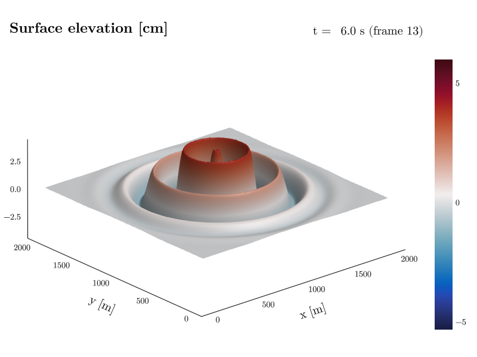
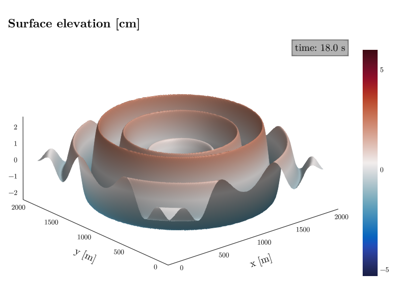

Animation and Playback
Any dimension that is not on a plot axis can be played like a movie. The viewer advances the dimension's index frame by frame and the plot updates live. This is the quickest way to scan through time steps, vertical levels, or ensemble members.
Playing a dimension
Four commands control playback.
play [dim]starts playback and optionally selects the dimension first.stoppauses it.pdim [dim]sets the dimension to animate without starting playback.speed [value]sets the playback speed. Values below 1 slow the animation down and values above 1 skip indices for faster scanning.
The example animates an idealized dataset, a circular surface wave expanding in a 2 km × 2 km box, drawn as a 3D surface.
CDFViewer> v eta
[ Info: Selected: eta
CDFViewer> x x
[ Info: Selected: x
CDFViewer> y y
[ Info: Selected: y
CDFViewer> p surface
[ Info: Selected: surface
CDFViewer> pdim time
[ Info: Selected: time
CDFViewer> play
[ Info: Playing.stop pauses. In the menu window, the Play row offers the same controls. A toggle, a speed slider, and the dimension dropdown sit next to a label that shows the current coordinate value as the animation runs.
You can also start animating right from the command line. Appending -a time to the arguments opens the viewer with time already playing.
Labelling the current frame
A recorded video carries no menu, so the frame itself has to say where in the animation it is. The current value of the play dimension is therefore shown right of the title, with the title on the left of the same row, on every axis type, 3D included.
Nothing shifts while the animation runs. The label is compiled into static text and value slots, and each slot is exactly as wide as the widest value its axis can produce, so the text around a changing number stays pinned and the number grows into its own slot.
The text is a template. {name} is the dimension's long name, {value} its current value including the unit, {rawvalue} the value without it, and {unit} and {index} the unit and the 1-based frame number. On a time axis {duration} writes the value as a compound time span instead (1d 12:00 rather than 129600 s). Every changing placeholder gets its own slot, so a template may mix several.
CDFViewer> animlabel="t = {rawvalue} s (frame {index})"
┌ Info: Current plot settings:
└ animlabel => "t = {rawvalue} s (frame {index})"
animlabelpos=:overlay draws the label inside the plot area instead. animlabelcorner picks its corner, and animlabelbg controls the translucent box that keeps it readable over the data. false removes the box and any color replaces it.
CDFViewer> del animlabel
[ Info: Current plot settings:
CDFViewer> animlabelpos=:overlay, animlabelcorner=:rt, animlabelbg=(:black, 0.3)
┌ Info: Current plot settings:
│ animlabelpos => :overlay
│ animlabelcorner => :rt
└ animlabelbg => (:black, 0.3)
Numeric axes derive their format from the axis itself, so every frame renders with the same number of digits (0.5, 1.0, 1.5 rather than 0.5, 1, 1.5). Changing widths would make the value wobble in place. Set animlabelnumfmt to a printf spec to override it, and animlabeldateformat to shorten the timestamps of date axes.
Values render in the dimension's native unit. When that unit makes for unwieldy numbers – seconds accumulating into days, say – animunit switches the label and the menu's playback readout to another unit of the same family (see Axis units): animunit="d" turns 432000 s into 5.0 d, and animunit="auto" picks a comfortable unit from the axis span. The derived number format follows the converted values, and a unit the dimension cannot convert to keeps the native rendering and reports why. Alternatively, the {duration} placeholder writes a time axis as a compound span (1d 12:00), choosing its components from the axis span and step; on a playback dimension that is no time span it falls back to the {value} rendering.
| Keyword | Default | Effect |
|---|---|---|
animlabel=true | true | false hides the label, a string sets the template |
animlabelpos=:title | :title | :title (right of the title) or :overlay |
animlabelnumfmt="%.1f" | "auto" | printf format for numeric axes (auto derives it from the axis) |
animlabeldateformat="yyyy-mm-dd" | "yyyy-mm-dd HH:MM:SS" | date format for time axes |
animunit="d" | (none) | render the value in another unit ("auto" derives one) |
animlabelcorner=:lt | :lt | the corner for :overlay (:lt, :rt, :lb, or :rb) |
animlabelbg=true | true | box behind the :overlay label (a color replaces it) |
animlabelsize=16 | 20 | fontsize of the label (slots resize with it) |
CDFViewer> reset
[ Info: Reset plot settings to default.Only the play dimension is labelled. Other dimensions held at a fixed index are not shown, and nothing is drawn until pdim selects a dimension. Set animlabel=false to turn the label off entirely.
Stable colors during playback
An unset color range would be derived from the frame Makie is currently showing, rescaling the colors on every step of an animation. The viewer pins it instead: once a play dimension is selected, a background scan finds the extrema over the whole playback cycle (the other sliced dimensions stay at their current index) and fixes the colors and the colorbar to them. The plot appears immediately, settles once when the scan finishes, and holds still from then on. Results are cached, so returning to a view is instant, and recording waits for an active scan.
The automatic scan is size-gated: a view whose scan would be expensive (hundreds of megabytes of data) keeps Makie's per-frame scaling and prints a hint instead of stalling the viewer. Setting colorrange="cycle" or "data" explicitly always scans, whatever the size.
The colorrange keyword selects the behavior.
| Value | Effect |
|---|---|
| (unset) | pin to the playback cycle when the scan is cheap (the default) |
"cycle" | extrema over the playback cycle, regardless of size |
"data" | extrema over the whole variable, stable across all sliders |
"frame" | Makie's per-frame autoscaling |
(lo, hi) | a manual range, which always wins |
For contour and contourf the pin fixes the contour levels instead – an integer levels re-bins from every frame's extrema. An explicit levels vector is never overridden.
Rotating the camera
On a 3D axis the camera can orbit on its own, so the view changes while an animation plays (or while a static field is on show). rotate sets the horizontal speed in degrees per second (rotate=36 is a full orbit in 10 s); rotatev moves the camera vertically, bouncing between horizon level and a steep top-down view (elevations 0° to 80°), so the scene is never shown from below. Grabbing the view with the mouse composes with the rotation, and recordings advance the camera exactly one step per video frame, whatever the render speed.
CDFViewer> rotate=20, rotatev=5
┌ Info: Current plot settings:
│ rotate => 20
└ rotatev => 5rotatevlim=(lo, hi) changes the elevation range of the vertical bounce (rotatevlim=(-80, 80) allows the view from below again), and rotatelim=(lo, hi) bounds the horizontal orbit to an azimuth sector, sweeping back and forth instead of circling – unset, the orbit is a full circle. A negative speed starts a bounded motion in the other direction, and a camera dragged outside the limits travels smoothly back instead of snapping.
The speed keywords apply to 3D axes (surface, wireframe, volume, contour3d); on a 2D plot they are stored and take effect once a 3D plot type is selected. del rotate rotatev stops the motion, leaving the camera where it is.
CDFViewer> del rotate rotatev
[ Info: Current plot settings:Recording an animation
The record command captures one full cycle of the play dimension to a video file. The file extension selects the format (MP4, MKV, WebM, or GIF). Colors hold still on their own; pinning the axis limits (and a manual colorrange, if you want a specific scale) keeps everything else from rescaling between frames.
CDFViewer> colorrange=(-3, 3), limits=(0, 2000, 0, 2000, -6, 6)
┌ Info: Current plot settings:
│ colorrange => (-3, 3)
└ limits => (0, 2000, 0, 2000, -6, 6)
CDFViewer> record filename=animation.mp4, framerate=24
[ Info: Finished recording. Saving ...
[ Info: Saved animation to animation.mp4The framerate and the frame range can be set as options. See Saving and Recording for all recording options and for non-interactive (batch) recording with --record.